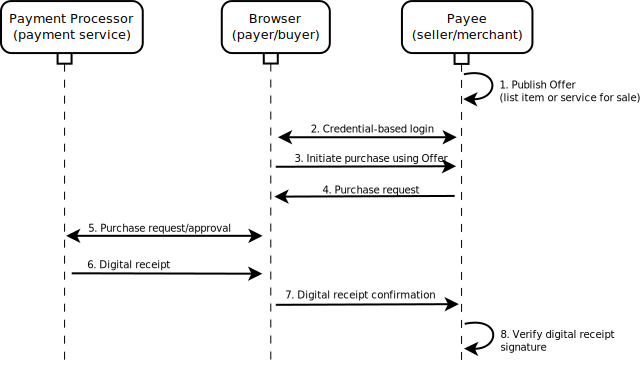

The freedom to transact and exchange value has become an important cornerstone of the Web. This specification outlines a browser polyfill that makes financial transactions easier to initiate and verify while also making them more secure. The solution is designed to work with both proprietary (PayPal, Google Wallet) and non-proprietary (PaySwarm, Bitcoin, Ripple) payment solutions.
This document is heavily influenced by the MozPay API from Mozilla, which was authored by Andreas Gal, Fernando Jiménez, Mike Hanson, and Kumar McMillan.
There are a number of ways that one may participate in the development of this specification:
This API enables a web application to initiate payment for a product or
service by calling a navigator.transact.pay() method. The
implementation of this feature is expected to be provided by a JavaScript
polyfill at first, and if deployment is successful, native browser
implementations will eventually surface to enhance usability and transaction
security.
This document is a detailed specification for an application programming interface (API) for initiating payments from within a browser environment. The document is primarily intended for the following audiences:
There are a number of terms used throughout this document that readers may not be familiar with. This section can be used as a reference for that terminology.
navigator.transact.pay() and requires
a client and server.
navigator.transact.pay(). The provider accepts
payment from a buyer and disperses income to the vendor.
A web app running on the vendor's website will interact with a
navigator.transact.pay().
Results of the payment request will be POSTed to the vendor's server.
navigator.transact.pay(request).
The diagram below outlines the basic payment flow described above. 
Describe the payment flow in detail here. Primarily, express how this approach utilizes a mechanism like Persona to deploy the API on websites using a centralized service and then decentralize the payment mechanism through the implementation of the dialog via a Web browser.
This is an implementation detail of the navigator.transact.pay() API does not prescribe any user
authorization scheme.
Specify user identity management, e.g. Persona, and describe how Persona coupled with the Web Identity specification can be used to discover a customer's payment provider.
This is an implementation detail of the navigator.transact.pay() API facilities two parties in
executing a transaction: 1) a
navigator.transact.pay() method is called with the
purchase request. This begins the payment provider buy flow
inside a dialog in the user agent.
var purchaseRequest = {
'@context': 'https://w3id.org/web-payments/v1',
paymentProvider: 'https://paymentprovider.com/transact',
listing: 'https://example.com/products/test#listing',
listingHash: '1ecd90db01ba293d097c713150defffa5e38bdabbe56e8950e4b354f514c7018',
paymentCallback: 'https://store.com/digital-receipts?nonce=2f73a2j'
}
Here is a detailed explanation of the purchase request:
For a user to make a purchase, the Application must execute the Javascript
method navigator.transact.pay() with the listing.
For example, the app might have a 'buy' button that
triggers this method when clicked.
navigator.transact.pay(purchaseRequest);
navigator.transact.pay method will POST the purchase
request to the payment provider and the result will be shown in a dialog,
so the buyer can confirm payment.
The user agent will POST a digital receipt to the paymentCallback if the payment is successful. If the payment is not successful, an error will be posted to the paymentCallback.
When a digital receipt is received, the application must verify the signature. If the signature is not valid, it should be ignored. If the signature is valid, the application should grant the buyer access to the item they purchased.
The vendor is going to have to have a whitelist of some sort to understand which payment processors' signatures it trusts on digital receipts. For example, perhaps PayPal, Google Wallet, and Amazon will be in a whitelist. This creates undue advantage to those organizations, so a generalized whitelist is going to be necessary if the system is going to scale to thousands of payment processors. This will most likely require some sort of regulatory body that approves payment processors (ensures that they've met some sort of fiduciary criteria).
Here is an example of a callback POSTed to the purchaseCallback that indicates a transaction was fully processed and was successful:
{
"@context": "https://w3id.org/web-payments/v1",
"id": "https://paymentprovider.com/transactions/1.3.12e.1e",
"type": ["Transaction", "Receipt"],
"amount": "0.05",
"currency": "USD",
"assetAcquirer": "https://paymentprovider.com/i/manu",
"assetProvider": "https://artists.com/i/artist",
"asset": "http://artists.com/writing/recipe#asset",
"assetHash": "urn:sha256:9b757aa92e3cad...16524fe58fc8bc6857a051",
"license": "https://w3id.org/web-payments/licenses/blogging",
"licenseHash": "urn:sha256:d9dcfb7b3b...d58e1b9",
"listing": "http://vendor.com/articles/10317#listing"
"listingHash": "urn:sha256:58c4bbff8073...67711454a10155",
"authorized": "2013-09-18T19:12:22Z",
"created": "2013-09-18T19:11:48Z",
"settled": "2013-09-18T19:12:22Z",
"vendor": "https://vendorpayments.com/i/vendor"
"signature": {
"type": "GraphSignature2012",
"created": "2014-02-18T09:10:58+00:00",
"creator": "https://paymentprovider.com/i/paymentprovider/keys/1",
"signatureValue": "dSVNyy+UJR3Y6zmw...XEoJfEdcHw=="
}
}
This browser-based API is provided for convenience purposes only. The existence of the API is absolutely not a requirement for the basic operation of the Web Payments protocol. No browser API is necessary in order for a Web application to initiate payment and receive a digital receipt of the result of the payment.
This API provides a clean mechanism that enables developers to
initiate payments in a
Navigator Transactions is the name of the high-level programming
interface that Web developers use to initiate payments. If MUST be
made available via the navigator.transact object.
Initiates a payment or refund given an array of [[!JSON-LD]] encoded payment requests describing the type of financial operations to perform.
Should we break refunds out into their own method call? The downside of doing that is that the API is no longer fairly generic. However, .pay() doesn't really imply "refund", unless you think of a refund like a reverse payment? The other thing we could do is use .process() or .transact() as the method call and change the interface name to something like navigator.funds.transact() or navigator.wallet.transact().
Each request object will contain a typ key. The value associated
with this key will be used to perform matchmaking between the customer's list
of registered payment providers and the list of preferred payment providers
for the Merchant. Typically, a
The editor would like to thank Andreas Gal, Fernando Jiménez, Mike Hanson, and Kumar McMillan for their work on the MozPay API.
Thanks to the following individuals, in order of their first name, for their input on the specification: ...